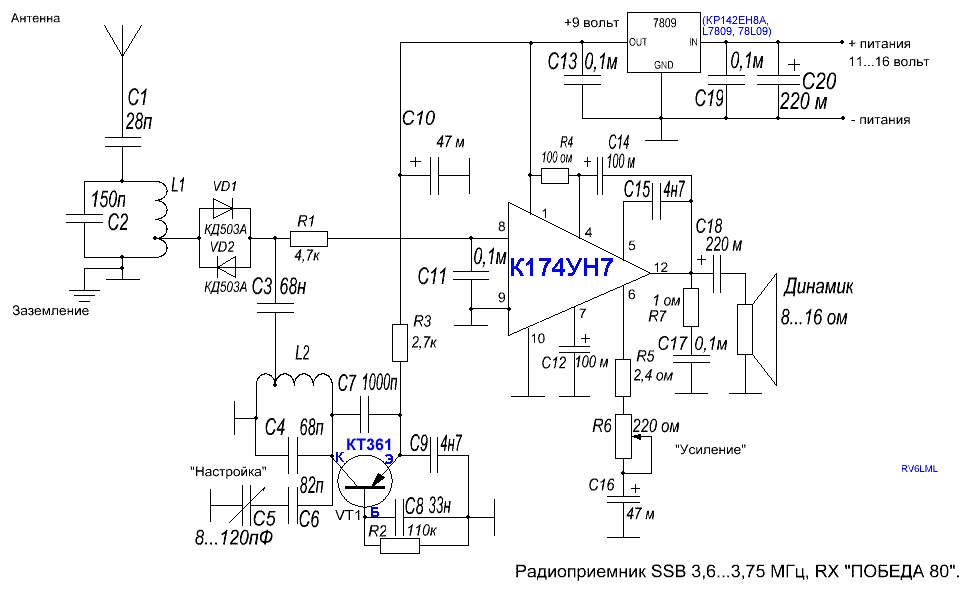
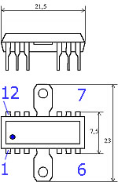
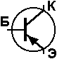
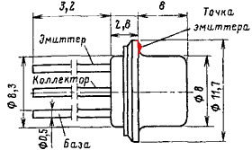
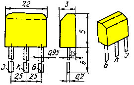
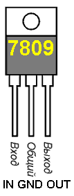
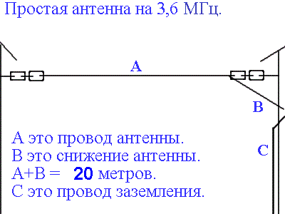
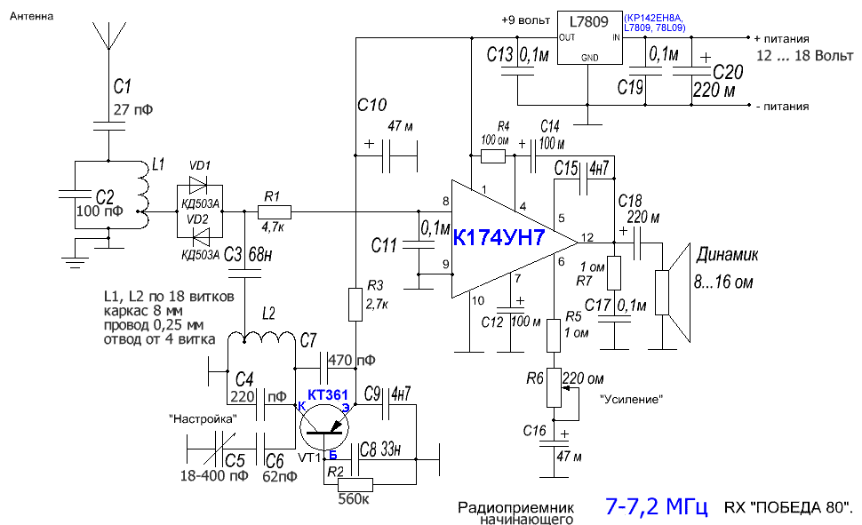

Приемник предназначен для прослушивания любительских
радиостанций в телефонном SSB участке диапазона 80
метров. Самым популярным участком для SSB станций
является 3,6...3,75 МГц.
Возможность приема телефонного SSB подразумевает
и прием телеграфных CW любительских радиостанций.
Т.к. приемник был спроектирован и собран в дни майских
праздников и отлаживался при прослушивании станций
со специальными временными любительскими позывными,
с суффиксом Радио Победа, назвал его Победа 80.
Внизу публикации предложены свежие дополнения
для сборки приемника на диапазон 40 метров,
оптимальный для знакомства с работой любительских
cтанций в эфире.
Приемник работает по схеме прямого преобразования.
Сигнал с антенны, как правило, "длинный луч" общей
длиной около 20 метров, через контур L1C2, настроенный
на середину принимаемого участка, например 3,67 МГц,
поступает на детектор VD1VD2, куда подается сигнал
гетеродина ГПД на VT1. ГПД работает на частоте в два
раза ниже принимаемого диапазона, и обеспечивает
рабочую частоту приемника Победа 80. Перестройка ГПД
производится конденсатором переменной емкости в
пределах приблизительно от 3,6/2=1,8 МГц до 3,75/2=1,875 МГц.
Фильтр низких частот R1C11 выделяет сигнал звуковой
частоты в полосе около 3 кГц, то есть голос оператора,
ведущего передачу. Низкочастротный сигнал поступает
на вход усилителя низкой частоты, собранного на микросхеме К174УН7.

Детали. Диоды VD1 и VD2 одинаковые КД503А, КД521 или
КД522. Транзистор КТ361 с любой буквой, можно заменить
на ГТ308В. Микросхема К174УН7 в данной схеме радиатора
не требует. В качестве динамика используется любой
громкоговоритель с хорошим звучанием на низких и средних
частотах с сопротивлением 8...16 ом или наушники с
параллельно соединенными телефонами на получившееся в
итоге сопротивление 8...30 ом. Конденсаторы С4, С6 и С7
обязательно с хорошим ТКЕ. Например прямоугольные
конденсаторы КСО или "трубочки" светло серого цвета.
Это важно для стабильности ГПД, точной настройки
приемника на SSB сигнал. Остальные конденсаторы любые
из имеющихся у вас конденсаторов с максимальным
допустимым напряжением не меньше 16 Вольт. Блок питания
любой источник постоянного напряжения 11...16 вольт на
ток до 100 мА. Приемник потребляет в среднем 12...60 мА.
Стабилизатор 7809 можно заменить на отечественный аналог
КР142ЕН8А или 78L09 на выходное напряжение +9 вольт с током
стабилизации 80 мА. C5 это конденсатор переменной
емкости, КПЕ от 8...25 до 80...495 пФ. Желательно выбрать
КПЕ с небольшим верньерным устройством. Так, чтобы ротор
КПЕ делал полную регулировку за 1,5 или более оборотов
ручки настройки. Ручку настройки следует взять большого
диаметра, для удобства точной настройки на телефонный SSB
сигнал, котрая, по сравнению с настройкой обычного am-fm
приемника, требует небольшой сноровки. Даже если у вас
получиться найти только обычный КПЕ, делающий половину
оборота ручки настройки, можно установить подбором C6,
в пределах 270 пФ, небольшой участок в диапазоне 80
метров, около 80...90 кГц, и вполне успешно настраиваться
на SSB сигнал в этом участке диапазона. R6 любой переменный
резистор с удобной ручкой для регулировки громкости
звучания приемника с максимальным сопротивлением
100...220 ом. Собрать приемник можно на небольшой
монтажной плате для микросхем. При сборке следует надежно
установить контурные катушки и обеспечить короткие выводы
деталей ГПД, транзистора VT1. Максимальное количество
проводников, соединенных с общим проводом и заземлением,
то есть минусом напряжения питания приветствуется.
Корпус можно спаять из фольгированного геттинакса или
стеклотекстолита толщиной 0,8...1,8 мм. КПЕ должен быть
жеско соединен с корпусом или печатной платой приемника,
как и место на плате, где установлен ГПД на транзисторе.
Очень длинные и висящие проводники и выводы деталей
оставлять не рекомендуется, но допускается при
первоначальной сборке и до окончательной настройки
работоспособности. Катушки L1 и L2 выполнены на каркасах
диаметром около 8 мм, с сердечниками для настройки, из
старой теле-радио аппаратуры. Катушки содержат по 38
витков медного провода в лаковой изоляции ПЭЛ или ПЭВ
диаметром около 0,22 мм с отводом от 6 витка, если
считать от нижнего провода, подключаемого к общему
проводу устройства. Намотка производится очень качественно,
строго виток к витку. Витки можно зафиксировать с помощью
клея. Можно использовать другие каркасы и провод, подобрав
ёмкость конденсаторов C2 и C4.
Расположение выводов
микросхемы К174УН7

Расположение выводов транзистора
P-N-P типа.

Транзистор КТ361 можно заменить на
транзистор ГТ308 или 1Т308.

Транзистор КТ361 Б или Г.

Буква транзистора КТ361 в обозначении
на корпусе находится посередине.

Настройка. Перед включением приемника подключать сразу
к стабилизатору напряжения каскады не следует. То есть
R3 и вывод 1 микросхемы с R4 временно не припаиваются к
конденсатору C10. При подключении источника питания
+11...+16 вольт следует убедиться, что на С10 присутствует
около +9 вольт и при подключении параллельно ему нагрузки
в виде резистора около 100...150 ом это напряжение не
изменяется. Итак, стабилизатор работает. Кратковременно
включаем между 1 выводом микросхемы с резистором R4 и +
конденсатора C10 тестер или мультиметр в режиме измерения
постоянного тока до 200 мА. Ток молчания верно собранного
усилителя НЧ на исправной микросхеме будет около 8...19 мА.
Подключаем микросхему к питанию и пальцем плотно
дотрагиваемся до точки соединения R1 с входом 1 микросхемы.
Ручка усиления должна соответствовать минимальному
сопротивлению R6. При этом в динамике должен прослушиваться
отчетливый звуковой фон. При работающем УНЧ подключаем к
питанию ГПД через резистор R3. Необходим осцилограф до
2 МГц или телеграфный приемник с точной шкалой настройки
диапазона 160 метров. Если посмотреть осцилографом на
выводе C3, не подключенного к VD1, VD2 и R1, осцилограф
должен показать синусоиду с частотой около 1,6...2МГц.
Установив КПЕ настройки вашего приемника в среднее
положение, настраиваем ГПД с помощью сердечника катушки
и подбора C4 на частоту 1,84 МГц. Это лучше сделать и с
помощью включенного телеграфного или SSB приемника на
частоте 1,84 МГц. Его антенна в виде провода длиной
около 1 метра должна располагаться в 10 см от вашего ГПД.
При настройке на заданную частоту в контрольном приемнике
услышите характерный свист вашего ГПД. Подстройтесь
поточнее контрольным приемником на этот свист и если его
тон сам по себе не меняется, значит катушка L2, транзистор
VT1, конденсаторы С4, С6 и С7 подобраны верно и ваш ГПД
обладает нормальной стабильностью.
Можно настроиться и по трансиверу с диапазоном 80 метров,
включенного рядом в режим передачи тонального сигнала на
частоте около 3,67 МГц, передающий на мощный эквивалент
вместо антенны. К приемнику, соответствнно, должна быть
подключена небольшая аненна, длиной около 2 метров.Конденсатор
C5 должен находиться в среднем положении. Сердечником
контура на L2 и подбором С4 находите громкий сигнал этого
трансивера. Сердечником контура L1 и подбором конденсатора C2
добиваетесь максимальной громкости приема при минимальной
мощности работающего рядом передатчика.

Антенна. На рисунке указана несложная антенна, пригодная
не только для наблюдений за работой любительских станций
в диапазоне 80 метров, но и для работы в эфире на
диапазонах 80 и 40 метров. Антенна выполнена из обычного
медного провода или биметалла с сечением больше 1,8 мм.
Изоляторы можно взять специальные керамические орешковые
или выпилить из толстого геттинакса или текстолита
прямоугольники около 4 x 8 см. В каждом просверлите по
два отверстия с расстояним между ними около 4,5 см. Чем
больше цепочка из изоляторов, тем больше слабых радиосигналов
будет поступать на вход вашего приемника. Оптимальное
количество по 2 шт на краях провода антенны А. Снижение
сдедует проводить через кирпичную стену или деревянную
раму с изоляцией от окружающих предметов мягкой трубкой
ПВХ или хорошим слоем скотча. Провод А самой антенны не
следует располагать ближе 1 метра от веток деревьев и не
ближе 3 метров от стен и крыш домов. Высота подвеса
провода А рекомендуется не меньше 8 метров. Рекомендуется
размещать рабочую поверхность антенны на расстоянии
значительно больше 4 метров от высоковольтных проводов,
жилых помещений и помещений с различной электроникой.
Провод антенны А и снижение B могут располагаться как
под углом, так и горизонтально. Сильно натягивать провода
не рекомендуется. Для работы на передачу и очень дальнего
приема рекомендовано использовать шину заземления вашего
дома или лучше изготовить заземление самому из 1-го и
больше металлических труб, прутков, вбитых на глубину 1
метра или листа железа, закопанного на большую глубину
с обеспечением очень хорошего контакта с землей и
естественно с проводом заземления. Место для заземления
следует выбирать с максимально влажной почвой и на минимальном
расстоянии от приемника или передатчика. Во время грозы
или сухой метели провод антенны следует отключать от
аппаратуры и соединять с проводом заземления. Лучше
установить между проводами антенны и заземления мощный
качественный выключатель с хорошо изолированной ручкой.
Теперь следует подключить антенну, длиной желательно 20
метров (не меньше 10 метров) расположенную естественно
снаружи дома. После захода солнца, когда на диапазоне
80 метров открывается дальнее прохождение радиоволн,
требуется подстроить контур L1 по громкости приема
радиолюбительских любительских станций, передающих
"Внимание всем на диапазоне 80 метров". Если у вас длинная
антенна и в прием лезут помехи от прочих служебных и
музыкальных радиостанций, соседних вашему диапазонов,
следует заменить или подобрать емкость C1 от 3 до 18 пФ.
В случае безуспешных попыток самостоятельной настройки
приемника рекомендуем обратиться за помощью в местный
радиокружок или лучше на местную коллективную любительскую
радиостанцию, где в наличии есть тестер, осцилограф,
приемник для 160 и трансивер на 80 метров. Там встречаются
хорошие специалисты и вместе вы наладите свой приемник.
Простой приёмник "Победа 80" работает на 40 метров, диапазон частот 7-7,2 МГц.
Собрав и настроив приёмник на диапазон 80 метров вы можете
повторить эту же конструкцию на диапазон частот 7000-7200 кГц,
любительский диапазон 40 метров, где прохождение радиоволн
присутствует в дневные и вечерние часы. В городах диапазон
40 метров меньше подвержен помехам, чем 80 метровый диапазон.
Антенна на диапазон 40 метров в два раза короче, что упрощает
её изготовление. Более высокочастотный диапазон требует
более качественного выполнения частотозадающего контура
и более точной настройки на рабочую частоту.

Количество витков L1 и L2 составляет 18 витков с
отводом от 4 витка. Каркасы катушек гладкие с
подстроечником. Диаметр каркаса 7-8 мм. Намотка виток к
витку проводом ПЭЛ или ПЭВ диаметром 0,25-0,33 мм.
Самую качественно сделанную катушку следует использовать
в роли L2. С1 = 27 пФ, подбирается под используемую антенну.
C2 = 100 пФ, резонансная частота входного L1C2 контура = 7,1 МГц
устанавливается по максимальному шуму эфира вблизи приёма
любительских станций и при подключенной наружной антенне.
C4 = 220 пФ, ГПД на VT1 (контур L2C4 гетеродина) приёмника,
для приёма частот 7000-7200 кГц, должен генерировать
частоты в два раза ниже принимаемых, то есть перестраиваться
КПЕ от 3500 кГц до 3600 кГц. C5 это КПЕ, некритично
12-495 пФ или 18-220 пФ, С6 = 56 ... 82 пФ, он подбирается
под используемый C5, C7 = 470 пФ, VT1 КТ361 Б или Г.
R2 = 560 кОм, может быть подобран 110-680 кОм, под конкретный
транзистор, по ровной синусоиде ГПД. С10, С12, С14, С16
и С18 на напряжение 10 Вольт и выше, С20 на напряжение
25 Вольт. VD1 и VD2 одинаковые, их следует подобрать по
близким показаниям мультиметра.
Антенной в этом диапазоне может быть "длинный луч" длиной
10 метров с изолятором на конце. Рекомендуем использовать
антенну "полуволновый диполь" общей длиной 21 метр
(лучи по 10,5 метров) со снижением коаксиальным кабелем
или дипольную антенну Inverted V.
При самовозбуждении усилителя К174УН7 следует увеличить
R5 до 2 ... 5 ом. При помехах от радиовещательных станций
следует уменьшить C1 до 10 ... 20 пФ, при недостаточной
чувствительности C1 следует увеличить. При замене антенны
или величины C1 следует повторно настроить контур L1C2 по
шуму эфира в районе принимаемых частот.
Печатная плата приёмника "Победа 80".
В архивном файле находятся все необходимые рисунки
печатной платы "Победа 80" + файл для LayOut 5. Размеры
печатной платы 65 мм * 70 мм.